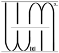
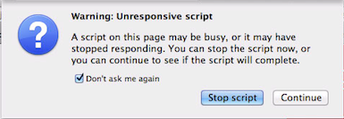

WIKIM2E Script
Once you have install Morzilla Firefox, go to the news article from the 2 websites.
Troubleshooting
If you encounter the below screenshot, tick "Don't ask me again" and click continue. It will not display you that message anymore.
Download Script
The script can be downloaded from here hosted under user script.
You will find "install" on your right, click on it and it will prompt you to click install.